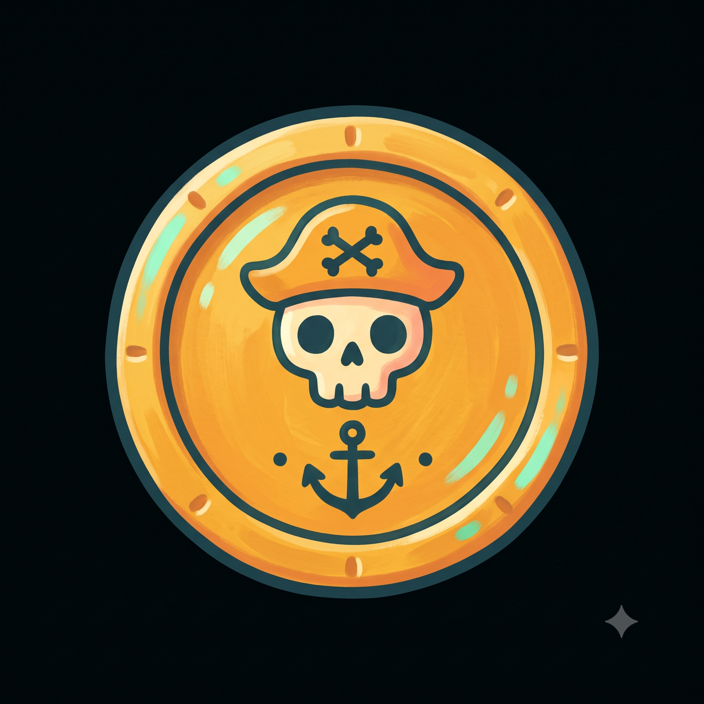
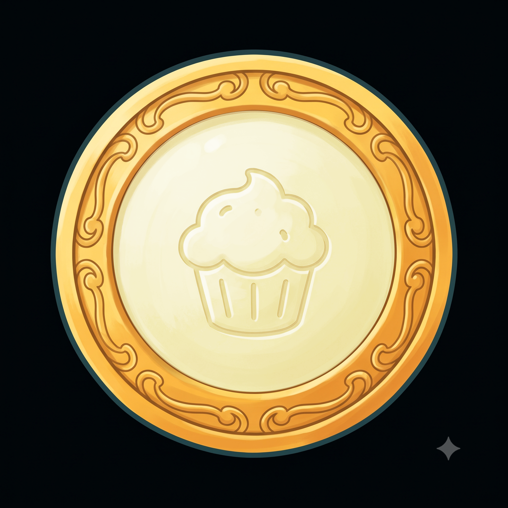
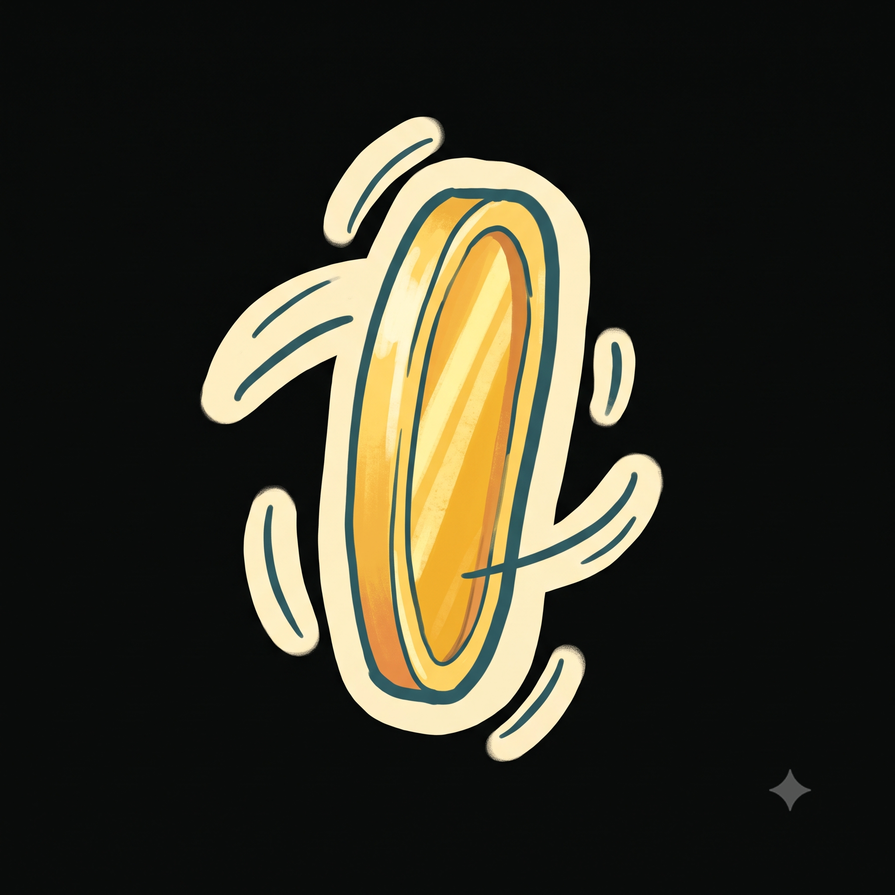

Economy / Flip (5) 5 icons

Doubloon (currency icon)
Prompt used
Hand-illustrated storybook game art, warm and playful pirate-nautical theme. Soft rounded shapes, gentle dark-teal outlines, hand-painted texture, cheerful saturated palette (sea teal #1d96a6, warm parchment #fff6c0, gold #f5a623, coral pink #f2679e, mint #27c78d, deep ink #1f4249). Friendly, kid-appropriate. A single game icon of a gold pirate doubloon coin, top-down view, ornate engraved rim, glossy metallic gold. 1:1 square, centered, on a solid flat near-black (#000001) background, no text.

Coin Flip — Heads
Prompt used
Hand-illustrated storybook game art, warm and playful pirate-nautical theme. Soft rounded shapes, gentle dark-teal outlines, hand-painted texture, cheerful saturated palette (sea teal #1d96a6, warm parchment #fff6c0, gold #f5a623, coral pink #f2679e, mint #27c78d, deep ink #1f4249). Friendly, kid-appropriate. A single game icon of a gold coin showing its light/obverse 'heads' face, top-down view. 1:1 square, centered, on a solid flat near-black (#000001) background, no text.
Coin Flip — Tails
Prompt used
Hand-illustrated storybook game art, warm and playful pirate-nautical theme. Soft rounded shapes, gentle dark-teal outlines, hand-painted texture, cheerful saturated palette (sea teal #1d96a6, warm parchment #fff6c0, gold #f5a623, coral pink #f2679e, mint #27c78d, deep ink #1f4249). Friendly, kid-appropriate. A single game icon of a coin showing its dark/reverse 'tails' face, top-down view. 1:1 square, centered, on a solid flat near-black (#000001) background, no text.
Win-streak Flame
Prompt used
Hand-illustrated storybook game art, warm and playful pirate-nautical theme. Soft rounded shapes, gentle dark-teal outlines, hand-painted texture, cheerful saturated palette (sea teal #1d96a6, warm parchment #fff6c0, gold #f5a623, coral pink #f2679e, mint #27c78d, deep ink #1f4249). Friendly, kid-appropriate. A single game icon of a small cheerful flame, simple, bold shape. 1:1 square, centered, on a solid flat near-black (#000001) background, no text.

Coin Mid-spin
Prompt used
Hand-illustrated storybook game art, warm and playful pirate-nautical theme. Soft rounded shapes, gentle dark-teal outlines, hand-painted texture, cheerful saturated palette (sea teal #1d96a6, warm parchment #fff6c0, gold #f5a623, coral pink #f2679e, mint #27c78d, deep ink #1f4249). Friendly, kid-appropriate. A single game icon of a gold coin captured mid-spin/flip, motion blur suggestion. 1:1 square, centered, on a solid flat near-black (#000001) background, no text.